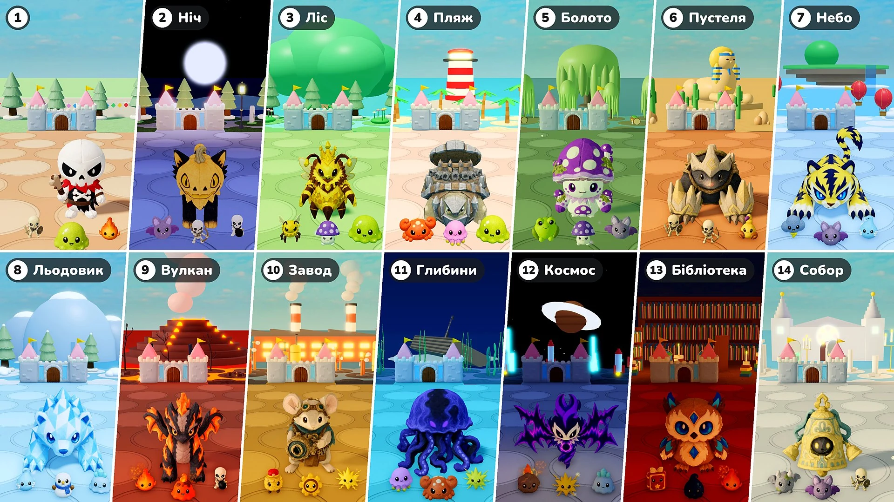

Сезон 2 · Оновлення 07 · 10 листопада

Захист замку
- Етапи: Тепер кожні 10 раундів — це етап. Етап 1 — містечко, як і раніше; з Етапу 2 кожен етап — це нове місце зі своїм світлом і погодою, землею та прикрасами, а також зі своїми монстрами, елітою і босами. Після останнього місця місця йдуть знову, починаючи з місця Етапу 2.
- Боси: Ще один бос кожні 10 раундів → завжди один бос, а разом із ним заходить стільки елітних ворогів, скільки було додаткових босів (1 у раундах 15 і 20, 2 у раундах 25 і 30…). З Етапу 2 боси й еліта — це іграшки цього місця. Іграшка «Медоквін» тепер теж може бути босом.
- Еліта: Елітні вороги тепер у 1,15 раза більші. З Етапу 2 їхнє здоров’я зростає на 50% за кожен етап, а зірки, які вони впускають, змінюються з 10 на 10 × номер етапу (20 на Етапі 2, 30 на Етапі 3…).
- Нові монстри: У місцях з’явилося 16 нових монстрів (Кажан · Краб · Медуза · Отруйна жаба · Скорпіон · Грозова хмара · Дух інею · Сніговик · Крижаний слиз · Лавовий слиз · Заводний солдатик · Шестерня · Метеорит · Книга заклять · Чорнильна крапля · Гаргуйля). Вкладки «Монстри» і «Боси» в Енциклопедії тепер поділено за етапами.
- Посилення характеристик: У раунді, де вибирають іграшку, Посилення характеристик більше не пропонується.
- Призвані: Виправлено помилку, через яку Посилення характеристик не діяли на призваних істот. Тепер вони діють на бджіл іграшки «Медоквін», дерево іграшки «Цвіросточок» та предмет «Дзеркальний двійник» так само, як на іграшки, а Посилення характеристик, вибране, поки призвана істота на полі, діє одразу.
- Швидкість ×2: Поруч із кнопкою паузи з’явилася кнопка «×2». Натисни її — і бій піде вдвічі швидше; натисни ще раз, щоб повернути звичайну швидкість. Час на вибір іграшок і посилень та хода твого аватара не змінюються. У режимі «Грати разом» змінюється вся гра, хоч би хто натиснув.
- Здоров’я замку: Смуга здоров’я замку стала більшою, а числа здоров’я стоять одразу біля неї.
Етапи і місця
Місця починаючи з Етапу 2, їхні монстри й боси. Іграшки, які приходять як Бос або Великий бос місця, приходять і як його еліта.
- Етап 2 · Ніч: Кажан · Скелет-лучник · Скелет-підривник — Бос: Мрійлис · Пухнастик — Великий бос: Жахолис · Гарбузкіт
- Етап 3 · Ліс: Робоча бджола · Отруйний гриб · Слиз — Бос: Шишкоїжак · Медоджем — Великий бос: Медоквін — Еліта: Цвіросточок
- Етап 4 · Пляж: Краб · Медуза · Слиз — Бос: Кокоблін · Кам’яна черепашка — Великий бос: Рокоблін · Залізна черепаха
- Етап 5 · Болото: Отруйна жаба · Отруйний гриб · Кажан — Бос: Багнючок · Отруторавлик — Великий бос: Болоторіг · Споровичок
- Етап 6 · Пустеля: Скелет-воїн · Скелет-лучник · Скорпіон — Бос: Боніс · М’яколапка — Великий бос: Бонікс · Залізолап
- Етап 7 · Небо: Грозова хмара · Кажан · Дух інею — Бос: Вольтіс · Аврокуниця — Великий бос: Вольтайгер · Грифіон
- Етап 8 · Льодовик: Дух інею · Сніговик · Крижаний слиз — Бос: Глассі · Крижорибка — Великий бос: Поларрок · Призмоспис
- Етап 9 · Вулкан: Жаринка · Лавовий слиз · Скелет-підривник — Бос: Фламо · Попелозмій — Великий бос: Фламонікс · Жарозмій
- Етап 10 · Завод: Заводний солдатик · Шестерня · Іскра — Бос: Маусбол · Цокотун — Великий бос: Оптимаус · Обскор
- Етап 11 · Глибини: Медуза · Краб · Іскра — Бос: Гідріс · Фріко — Великий бос: Сереніс · Абізел
- Етап 12 · Космос: Метеорит · Іскра · Крижаний слиз — Бос: Войдрен · Ековінг — Великий бос: Войдлінг · Нойзвінг
- Етап 13 · Бібліотека: Книга заклять · Чорнильна крапля · Жаринка — Бос: Мелті · Шипосова — Великий бос: Кандрік · Кристаул
- Етап 14 · Собор: Гаргуйля · Кажан · Скелет-воїн — Бос: Лілупі · Дзвоник — Великий бос: Сяйво · Дзвонище